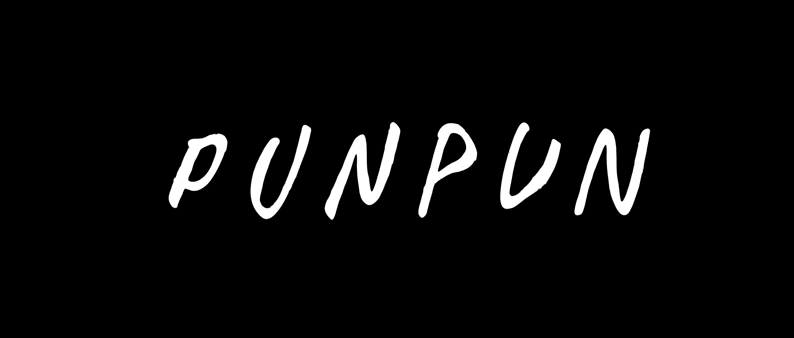
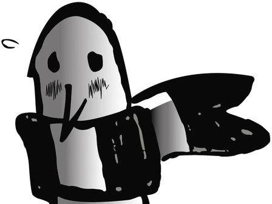

Motivos para ser mod do Eskimo
- Eu sei fazer um site
- Eu já fui administrador de mais de 10 canais da Twitch
- Acompanho o Eskimo desde o começo do ano
- Eu trouxe diversos conteúdos de qualidade para serem reagidos
- Eu dei a ideia da subatton que aconteceu no meio desse ano
- Eu nunca tomei ban ou timeout
- Sempre compareci às lives antes mesmo delas começarem
- Ajudei o Eskimo no Sekiro pedindo para ele rushar e upar
- Sempre fui esquisito e portanto, fiz muitas vezes o chat rir
- Eu havia ganhado vip participando do evento de ad ajudando o eskimo
- Idade: punpun_punnyama
- Nome: 16